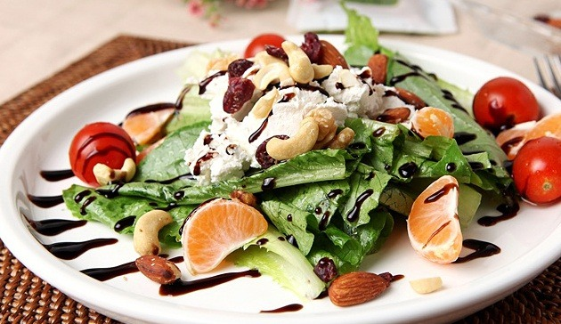
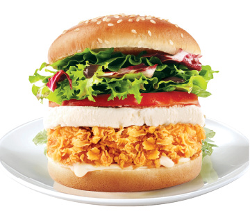

리코타(Ricotta)
리코타는 치즈를 만들고 남은 부산물로 만든 부드럽고 달콤한 맛의 이탈리아의 유제품입니다.
우유를 가공하여 만들고 짭조름하기 때문에 치즈로 알고 있는 분들이 많습니다. 실제로 리코타와 거의 차이가 없는 치즈인 코티지라는 치즈도 존재합니다. 그러나 우유의 단백질인 카제인을 응고시켜 만드는 것이 아니기 때문에 치즈에는 속하지 않습니다.
리코타는 원유에 따라, 생산 방법에 따라 다양하게 분류됩니다. 우리에게 널리 알려진 리코타는 소젖으로 만드는 리코타 디 무카(ricotta di mucca), 소금을 넣고 힘을 가해 물기를 빼낸 후 건조, 숙성하는 리코타 살라타(ricotta salata)입니다. 집에서도 쉽게 만들 수 있기 때문에, 직접 만들어 먹는 사람도 많습니다.
 리코타는 샐러드의 재료로 많이 사용됩니다. 파스타에도 주로 뿌려지며, 부드럽고 달콤하여 지방함량이 낮기 때문에 부담되지 않고 잘 어울립니다.
근래에 프랜차이즈 햄버거의 재료로 추가되고 있습니다. 2016년 맥도날드가 리코타 치즈 상하이 버거라는 이름으로 도입하였으며, 이후 맘스터치도 리샐버거라는 이름으로 도입하였습니다. 햄버거와 어울리는지에 대한 의견이 분분하며, 아직 널리 알려지지 않은 상태입니다.